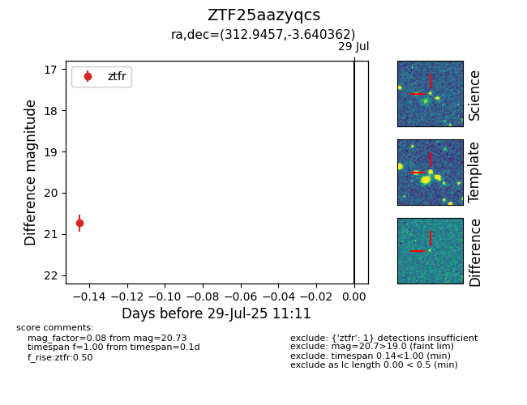

Target ZTF25aazyqcs at 2025-07-29 11:11, see:
FINK: fink-portal.org/ZTF25aazyqcs
Lasair: lasair-ztf.lsst.ac.uk/objects/ZTF25aazyqcs
ALeRCE: alerce.online/object/ZTF25aazyqcs
alt names
ZTF25aazyqcs (ztf,fink)
coordinates:
equatorial (ra, dec) = (312.9457,-3.64036)
galactic (l, b) = (44.1724,-28.30760)
photometry
last ztfr=20.73
1 ztfr detections
